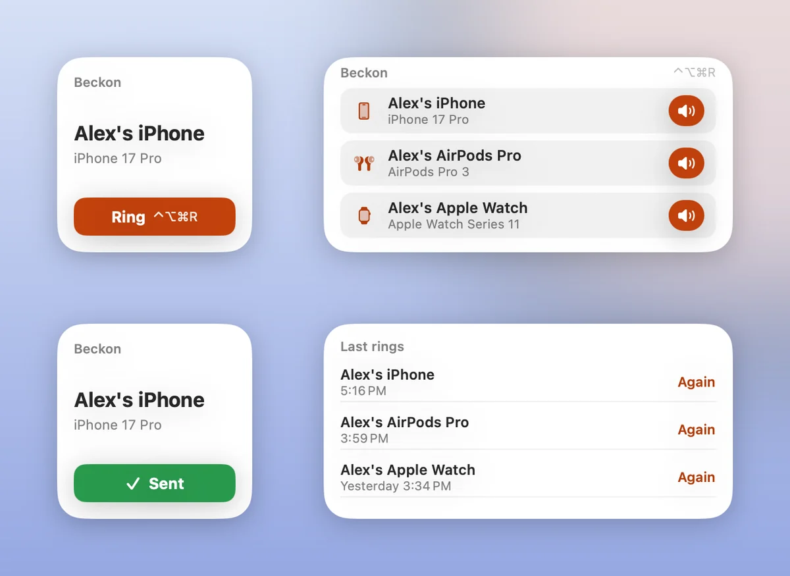
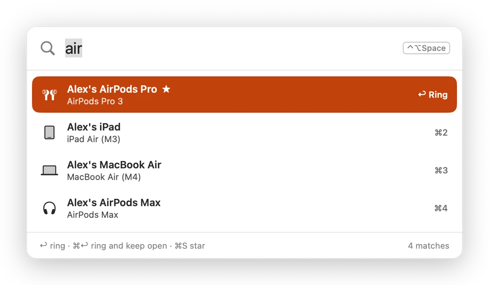
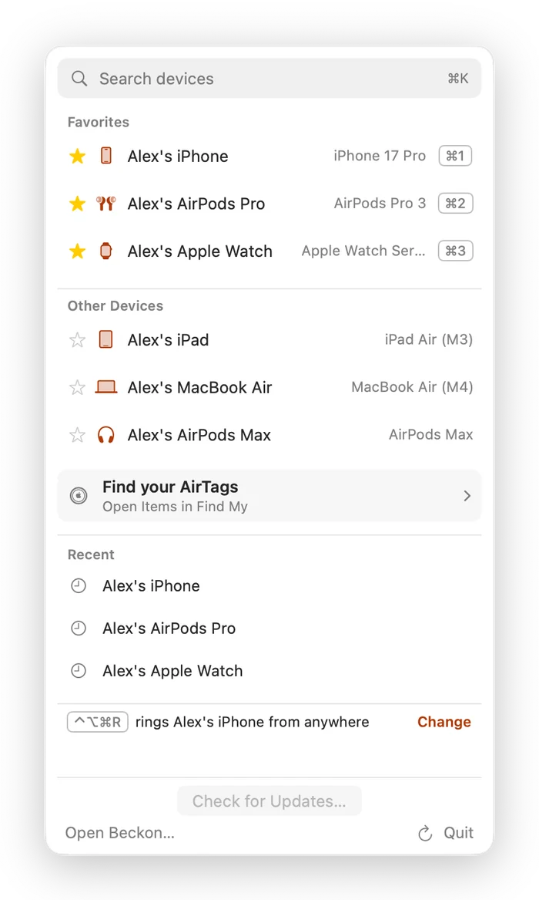
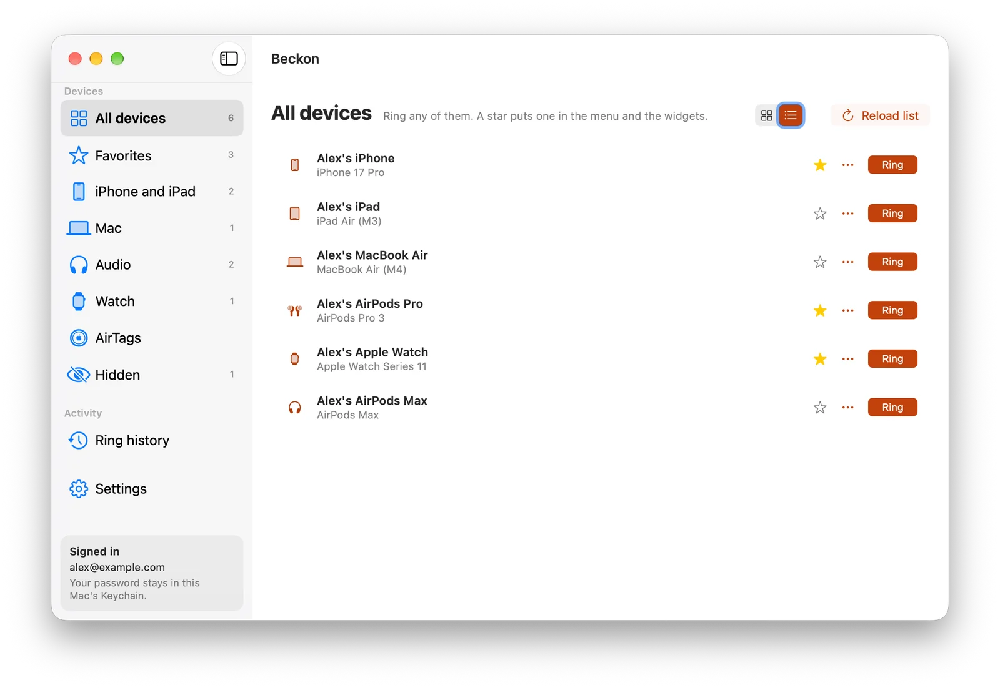

01
Desktop widgets
One click on Ring sends it straight from the widget, even with the app closed. The button says Sending… right away, then Sent once Apple has it. Last rings rings anything again.

Beckon
Beckon makes a misplaced iPhone, iPad, AirPods or Apple Watch play a sound, even on silent. From the menu bar, a desktop widget, a shortcut key or Siri, without opening Find My.
Free · macOS 14 or later · Apple silicon and Intel · signed and checked by Apple
Click Download for Mac, open Beckon.dmg and drag Beckon onto Applications in the window. Open Beckon from Applications to finish; it offers to remove the downloaded DMG and ejects the installer. Future updates are offered inside Beckon.
Click the Beckon icon in the menu bar and sign in with your Apple Account email and password. Apple checks the password before Beckon saves it, in your Mac's Keychain.
Star the devices you lose most. They go to the top of the menu, onto the widget, and onto ⌘1–⌘9. Add the Ring widget from the desktop's Edit Widgets.
01
One click on Ring sends it straight from the widget, even with the app closed. The button says Sending… right away, then Sent once Apple has it. Last rings rings anything again.

02
Press ⌃⌥Space anywhere, type a few letters and press Return. ⌃⌥⌘R rings your favorite without even that. Both keys can be changed.

03
Search with ⌘K, your favorites with their keys, and your last rings with Again. Beckon lives here, with no Dock icon unless its window is open.

04
All your devices by type, devices you've hidden (old Macs, say), your ring history and settings. Siri and Shortcuts get Ring a Device too: "Ring my device with Beckon."

No. Beckon is an independent app. Apple has no public way to make a device play a sound, so Beckon signs in to Find My's web service with your password, the same way iCloud.com's Find Devices does. Apple could change that service at any time, and automating iCloud may go against its terms, so use it for your own devices and at your own risk.
That's how Find My on the web lets a device ring without a two-factor code. Beckon checks the password with Apple before saving it, and if Apple ever rejects it (say you changed it), Beckon forgets it rather than trying again.
Each ring signs in to Apple and then sends the sound, which takes about two to three seconds. The widget shows Sending… meanwhile.
No. Find My on the web can't reach AirTags; only the Find My app can play their sound, over Bluetooth. Find your AirTags in Beckon's menu opens Find My's Items tab, so you can pick the AirTag there and press Play Sound.
Not yet. Beckon is Mac only for now.
Yes, it's all on GitHub under the MIT License, including how the sign-in works.
I'm Daniel Yakobian, an independent developer. Beckon is free, and questions and bug reports come straight to me.
danielyakobian.com · GitHub · LinkedIn · support@danielyakobian.com
Questions and bug reports: support@danielyakobian.com, or open an issue on GitHub.
Privacy policyTerms of service
Beckon is made by Daniel Yakobian. Not affiliated with Apple. iPhone, AirPods, AirTag and Find My are trademarks of Apple Inc.